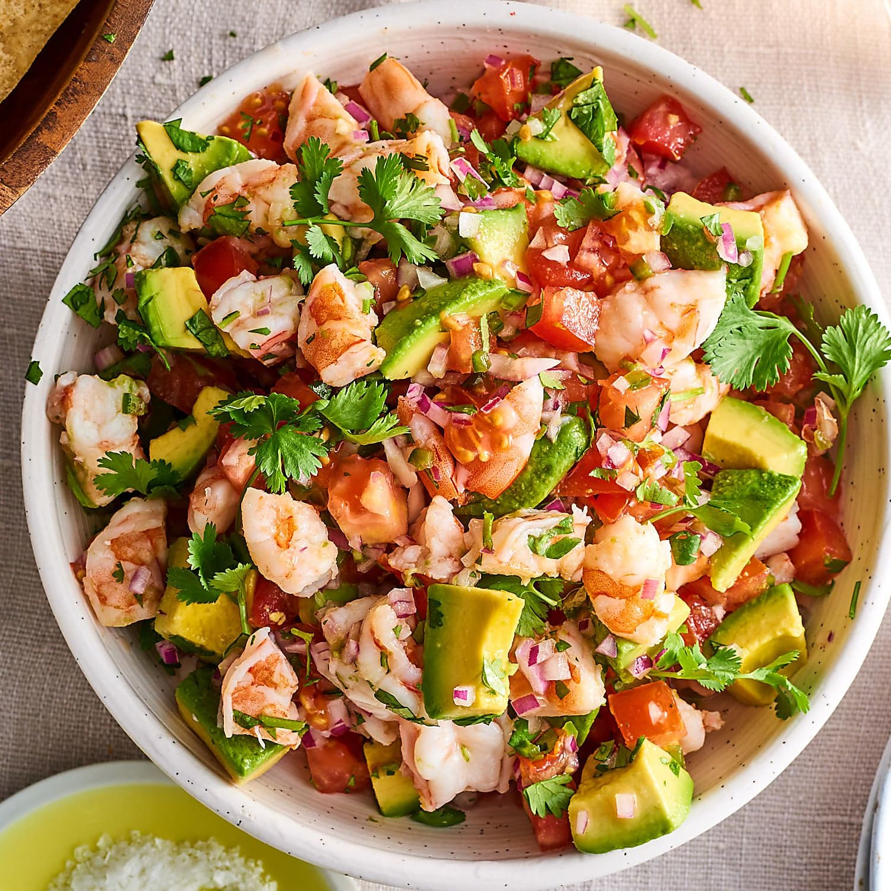

Ceviche
\
Description
This is a Mexican dish which is created by taking cooked or uncooked shrimp and marinating it in lime juice and mixing with an assortment of fruits and veggies.
Most ceviche dishes typically include onion, tomatoes, and cilantro. Adding anything beyond that is really up to the person making the ceviche
Ingredients
- 1 pound of peeled and deveined medium shrimp, diced (Optional:cooked, preferably boiled)
- 1 cup of fresh lime juice
- 1 large red onion, diced
- 2 roma tomatoes, diced
- fresh chopped cilantro to taste
- salt and pepper to taste
- 1 large cucumber, diced (Optional)
- 1 jalapeno pepper, diced (Optional)
- 2 avocadoes, diced (Optional)
Steps
- Place shrimp in a large glass bowl and cover with lime juice to marinate for about 15 minutes, or until pink.
- Add fruits and veggies to the bowl with salt and pepper to taste.
- Mix ingredients